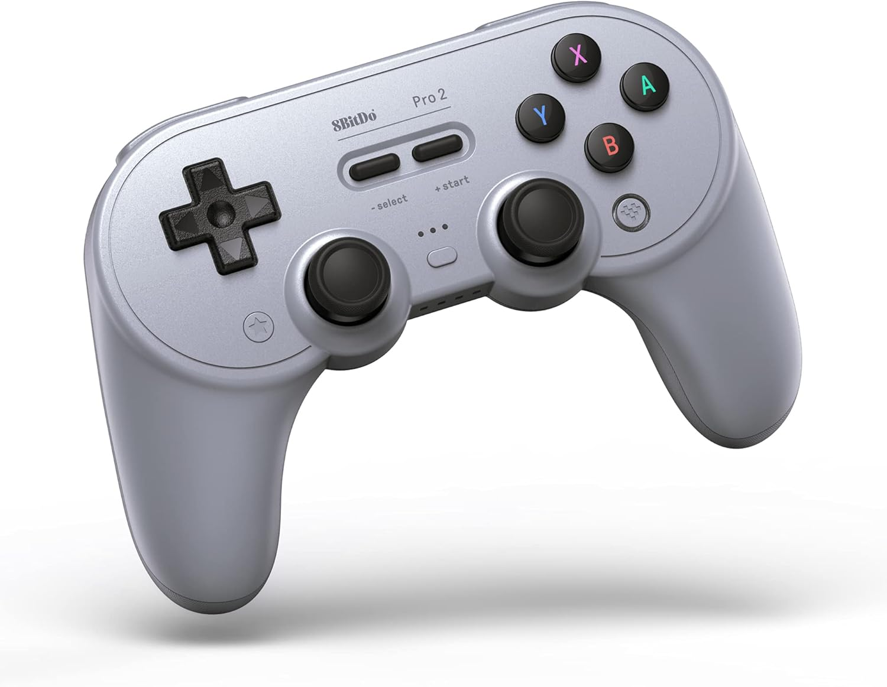
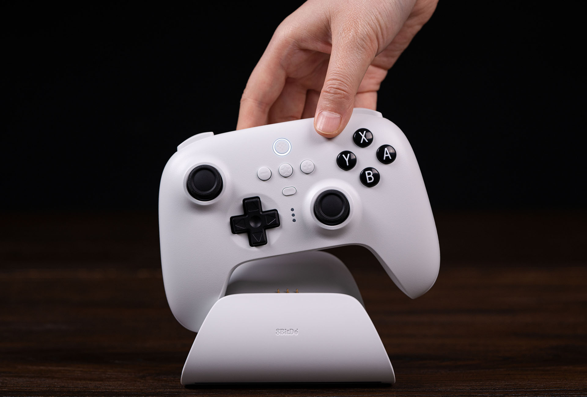
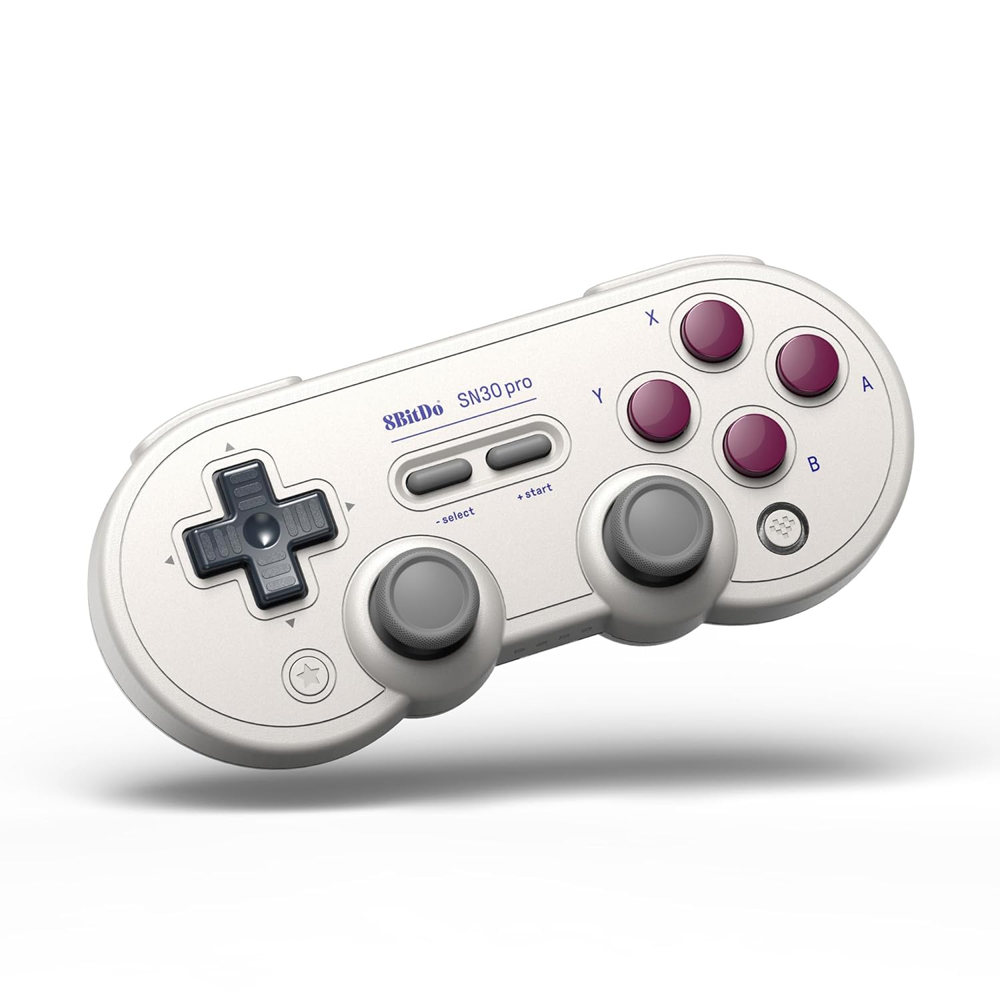
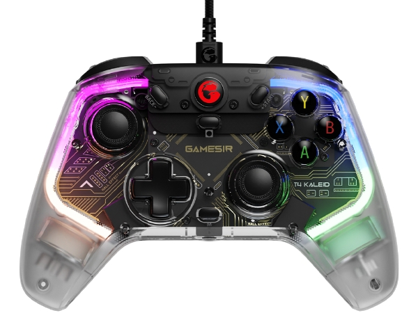
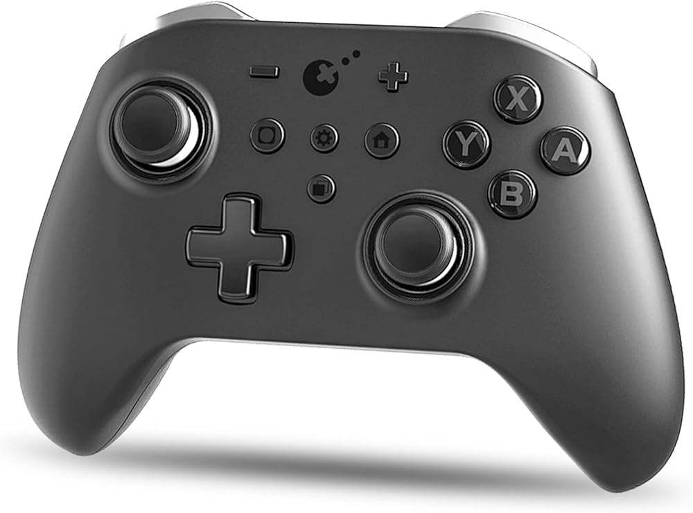
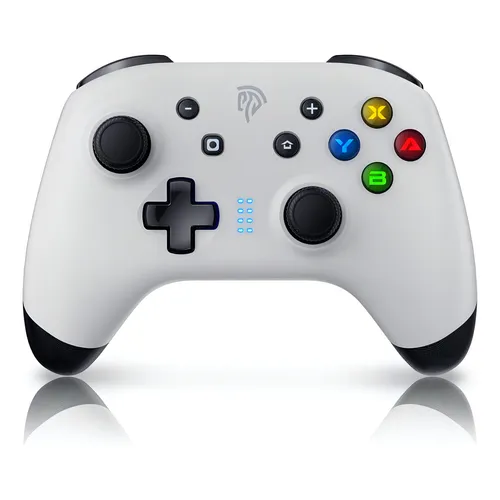
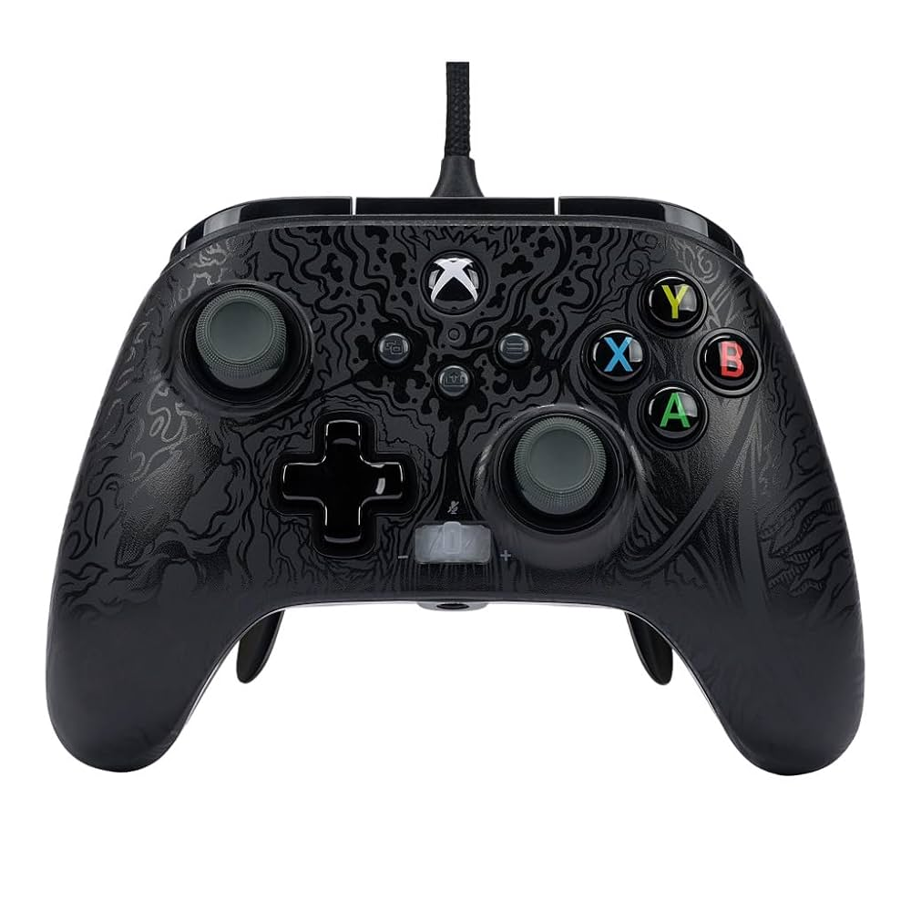

Bem-vindo ao mundo dos controles para PC
Os controles para computador evoluíram muito nos últimos anos, oferecendo opções para todos os tipos de jogadores. Desde os nostálgicos controles retrô até os modernos controles com tecnologia de ponta, há uma opção para cada preferência. Neste site, exploramos algumas das melhores marcas disponíveis no mercado.
Controles 8BitDo

8BitDo Pro 2
O 8BitDo Pro 2 combina o design clássico com funcionalidades modernas, oferecendo conectividade Bluetooth, modo PC, Android, Switch e mais. Possui botões traseiros programáveis e até 20 horas de bateria.
Visite o Site Oficial
8BitDo Ultimate
Com design ergonômico, conectividade 2.4GHz e Bluetooth, e dock de carregamento incluído, o 8BitDo Ultimate é perfeito para quem busca performance e praticidade para jogos no PC.
Visite o Site Oficial
8BitDo SN30 Pro
Inspirado no clássico controle do Super Nintendo, o SN30 Pro mantém a estética retrô mas adiciona alavancas analógicas, vibração e conectividade moderna para uso no PC e outros dispositivos.
Visite o Site OficialControles GameSir

GameSir T4 Kaleid
Com iluminação RGB personalizável, conectividade sem fio 2.4GHz e Bluetooth, e design ergonômico, o T4 Kaleid é uma excelente opção para jogadores de PC que buscam estilo e desempenho.
Visite o Site OficialGameSir X2
Projetado especialmente para jogos em nuvem e emuladores no celular, o GameSir X2 também funciona perfeitamente no PC, oferecendo controles precisos e design compacto e portátil.
Visite o Site OficialGameSir G7
Com foco em jogadores de PC e Xbox, o GameSir G7 oferece gatilhos adaptáveis, botões traseiros programáveis e construção premium para sessões de jogo prolongadas e confortáveis.
Visite o Site OficialOutras Marcas

Gulikit KingKong 2 Pro
Com sticks analógicos sem drift (Hall Effect), vibração HD e compatibilidade multiplataforma, o KingKong 2 Pro é uma excelente alternativa para quem busca tecnologia avançada em controles.
Visite o Site Oficial
EasySMX 9124
Com design ergonômico, iluminação RGB e conectividade sem fio de 2.4GHz, o EasySMX 9124 oferece ótimo custo-benefício para jogadores casuais e entusiastas de PC gaming.
Visite o Site Oficial
PowerA Fusion Pro 2
Com botões traseiros removíveis, ajustes de sensibilidade de gatilho e construção premium, o Fusion Pro 2 é uma ótima opção para jogadores competitivos no PC.
Visite o Site Oficial